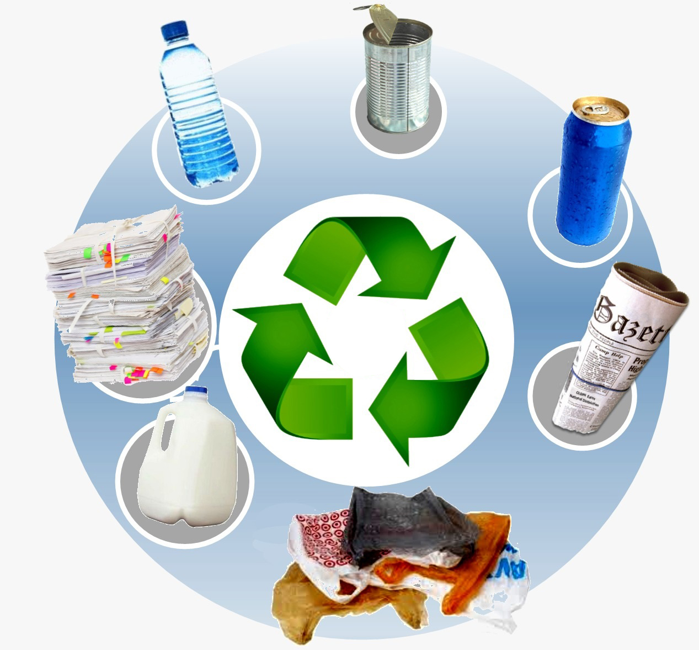

My Page
Home
About
Services
Commonly Recycled Products

- Plastics: Many plastic containers and bottles can be recycled. Check for recycling symbols on the bottom.
- Paper: Newspapers, magazines, and cardboard are among the easiest recyclable materials.
- Glass: Glass bottles and jars can be recycled endlessly without losing quality.
- Metals: Aluminum cans (like soda cans) and tin cans are highly recyclable.
- Electronics: Old electronics can often be recycled through specialized programs.
Benefits of Recycling Products
- Conserves natural resources and reduces the need for raw materials.
- Decreases pollution by reducing the waste sent to landfills.
- Saves energy compared to producing new items from raw materials.
- Creates job opportunities in recycling and manufacturing sectors.
- Promotes responsible consumer behavior and environmental awareness.
Tips for Recycling Products

- Always clean and rinse recyclable containers to prevent contamination.
- Know your local recycling guidelines as they can vary by location.
- Avoid wish-cycling; only recycle items that are accepted in your local program.
- Participate in take-back programs for electronics and hazardous waste.
- Encourage others to recycle by sharing information and resources.